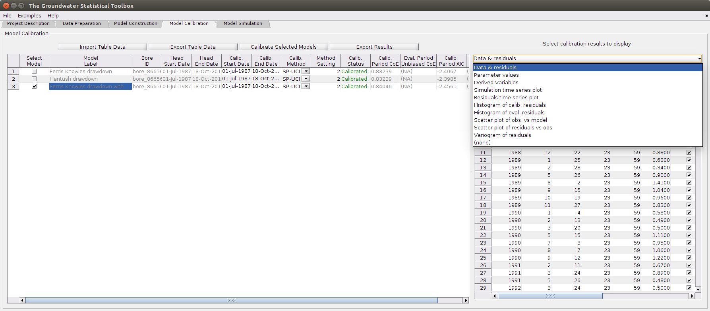

Groundwater Statistical Toolbox - Model Calibration GUI Tab
Contents
Overview
The Model Calibration tab allows the global calibration of constructed time-series models. The global optima can be identified as a single best parameter set or a population of parameter sets, which allows quantification of the parameter and simulation nonlinear uncertainty. For the former, use the calibration methods CMA-ES or SP-UCI (a variant on Shuffled Complex Evolution). For uncertainty estimation, use the metthod DREAM. Finally, if you are unfamiliar with global calibration, see here for details.
The time-series models can be challenging to calibrate and it often requires 100,000+ model runs. To reduce the calibration time, use a PC with many cores and for the TFN models consider limiting the years of input forcing data prior to the first water level observation to ~20 years.
The calibration time can also be reduced by offloading the calibration to a high performance cluster. This allows numerous models to be calibrated simultaneously. Curently, this is a beta feature and is limited to Linux clusters using PBS queue system and mpiexec.hydra and with matlab >=2014b installed. To offload the calibration, click on the button HPC Offload (only available when runnign from within Matlab). Once the calibration is complete, click on HPC Retrieval to inport the results back into your project. Additionally, the model TFN time-series model can also be calibrated using Xeon Phi co-processor cards. If a co-processor card is available on the cluster then the numerical intergration step of the TFN model will be undertaken using the co-processor card(s). To use this features, the cluster will also require the Intel compiler ICC >=2013.
Once a model is calibrated the following tasks can be undertaken:
- simulation of the groundwater head.
- split-sample evaluation of the calibration using observation data not included in the calibration.
- calculation of various performance statistics and a variogram of the residuals.
The screenshot below illustrates the main features of the tab. Specifically:
- The left-hand table lists the bores that have been constructed and can be calibrated.
- Unique calibration setting can be defined to each row of the table.
- Detailed calibration results are shown in the right-hand pane. The drop-down menu (see screenshot) lists the available results to display.
- Calibration performance metrics are listed in the right-hand columns of the table. These allow the efficient identification of the acceptable models or the identification of the best model structure for a bore.
- Buttons above the table allow export of the table or import of a .csv file.

Getting Started
To calibrate a time-series model, complete the following steps:
- Locate the required model to calibrate within the Model Label column.
- Input a start and end date for the calibration. Note, by default these dates are set to the start and end date of the observed hydrograph.
- Select a calibration scheme and input the required one calibration setting (see the tool tips for details, or click here.
- Select the models to be calibrated using the left-hand tick boxes.
- Click on the button Calibrate Selected Models to calibrate the models. The progress is displayed in the column Calib. Status.
- Review the calibration results using the performance statistics within the table and the detailed results within the right-hand pane.
Inputs
The following inputs are available for this tab. The bold inputs are required:
- Calib. Start Date: The start date for selecting water level observations to be used in the calibration. Observations prior to this date will be used in the evaluation calculations.
- Calib. End Date: The end date for selecting water level observations to be used in the calibration. Observations after this date will be used in the evaluation calculations.
- Calib. Method: The global calibration method. See here for details of the available methods.
- Calib. Setting: A setting for the selected global calibration method that controls the rigor of the global calibration.
Outputs
The following outputs are presented within the table:
- Calib. Status : the status of the model calibration is displayed within the table. Error messages for the calibration are also displayed.
- Calib. Period CoE : The coefficient of efficiency calculated from observations within the calibration period. Note, 1 denotes a perfect fit to the observation data, 0 denotes a fit equal to that from just using the mean observed water level, and <0 denotes a fit worse than using the mean observed water level.
- Eval Period Unbiased CoE : The unbiased coefficient of efficiency calculated from observations outside of the calibration start and end dates. The unbiased term denotes that the calculation was undertaken after the simulated water level was adjusted to have an equal mean to the mean observed water level during the evaluation period.
- Calib. Period AIC : The Akaike information criterion during the calibration period. It is a measure of model performance that accounts for the number of model parameters. It is useful for comparing different models applied to the same data. A lower AIC denotes a more parsimonious model (see here for details. Note, the AIC is calculated using the least squares estimate of the liklihood function.
- Eval. Period AIC : The Akaike information criterion during the evaluation period.
In addition to the above table of outputs, detailed outputs can be shown in the right-hand pane. The available outputs are detailed below. To access these outputs, select the required output from the right-hand drop-down menu and then place the cursor in a cell for the required model.
- Data & residuals : table of estimated water level and noise. The table can be selected and copied and pasted into, say, Excel.
- Parameter values : the optimal calibrated parameter values.
- Derived Variables : derived variables specific to the model type.
- Simulation time series plot : plot of the simulated and observed head.
- Residuals time series plot : scatter plot of the observed minus estimated water level. These should be randomly distributed, have a mean of zero and have no temporal trend.
- Histogram of calib. residuals : histogram of observed minus estimated water level during the calibration period. The distribution should have a mean of zero and have a narrow range.
- Histogram of eval. residuals : histogram of observed minus estimated water level during the evaluation period. The distribution should have a mean of zero and have a narrow range.
- Scatter plot of obs. vs model : plots the calibration period observed vs simulated water level. The points should be centred around the 1:1 line and have a similar spread along the 1:1 line.
- Scatter plot of residuals vs obs : plots the observed water level vs residuals. Ideally, the residuals should show no relationship with the observed water level.
- Variogram of residuals : plots the temporal correlation in the residuals and fits an exponential model to the experimental variogram. Ideally, the fitted variogram curve should approach its maximum value after a short temporal duration.